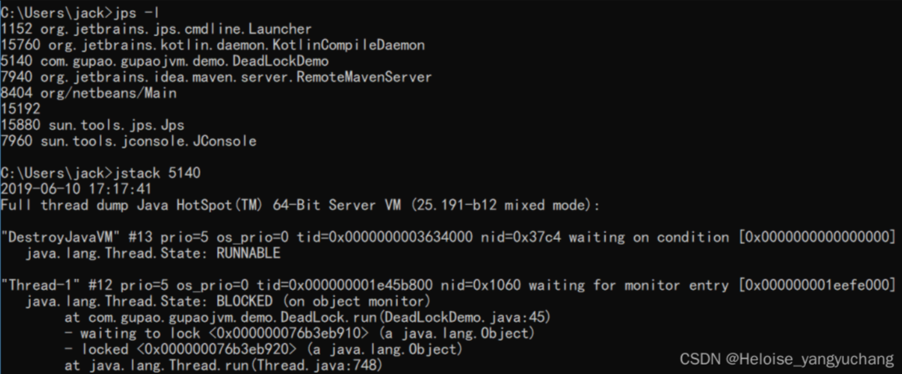
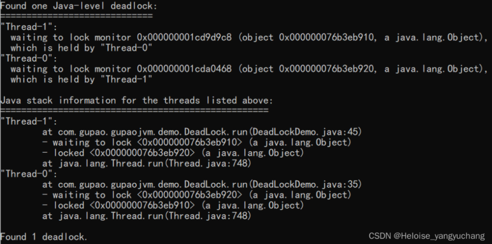
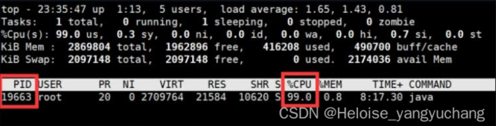
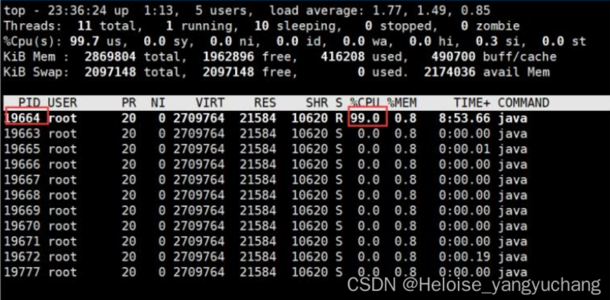
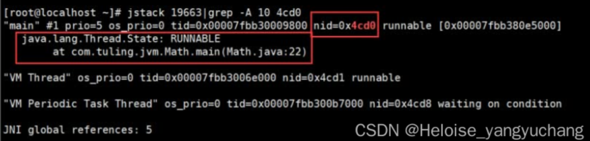
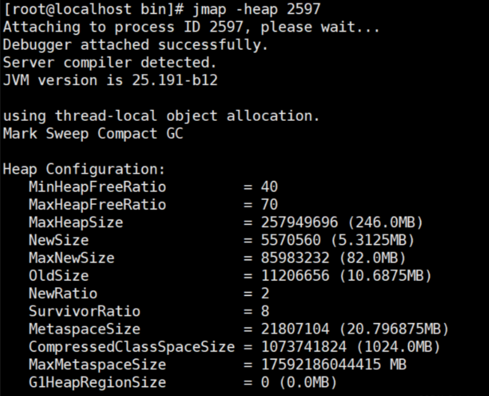
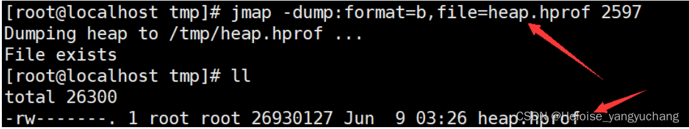
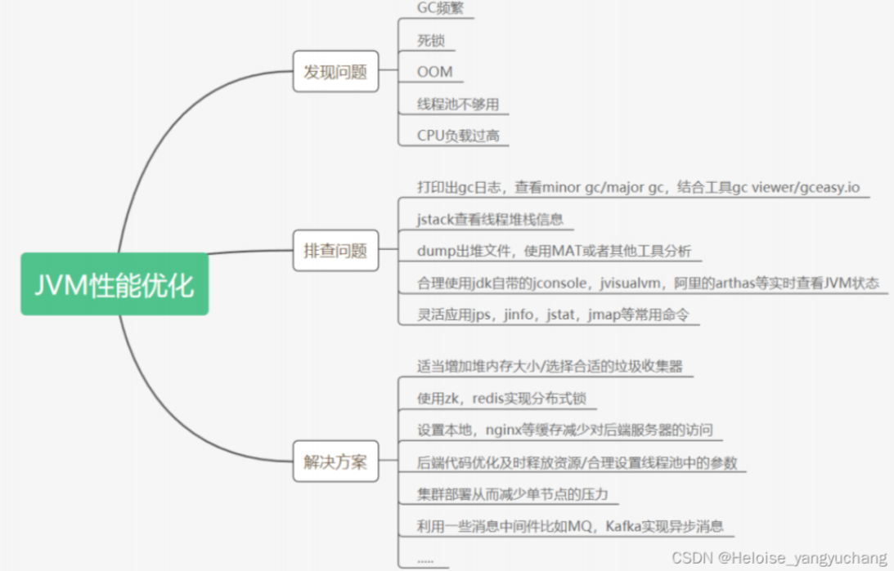

JVM命令
常用命令
jps
1
2
3
4
5
6jps # 显示进程的ID 和 类的名称
jps –l # 输出输出完全的包名，应用主类名，jar的完全路径名
jps –v # 输出jvm参数
jps –q # 显示java进程号
jps -m # main 方法
jps -l xxx.xxx.xx.xx # 远程查看jinfo
1
2
3
4
5
6
7
8
9
10
11
12
13
14
15
16
17输出当前 jvm 进程的全部参数和系统属性
jinfo 2815
输出所有的参数
jinfo -flags 2815
查看指定的 jvm 参数的值
jinfo -flag PrintGC 2815
开启/关闭指定的JVM参数
jinfo -flag +PrintGC 2815
设置flag的参数
jinfo -flag name=value 2815
输出当前 jvm 进行的全部的系统属性
jinfo -sysprops 2815jstat
查看类装载信息
jstat -class PID 1000 10 查看某个java进程的类装载信息，每1000毫秒输出一次，共输出10次查看垃圾收集信息
jstat -gc PID 1000 10jstack
1
2
3
4
5
6
7
8
9
10基本
jstack 2815
-l #长列表. 打印关于锁的附加信息,例如属于java.util.concurrent 的 ownable synchronizers列表.
-F #当’jstack [-l] pid’没有相应的时候强制打印栈信息
-m #打印java和native c/c++框架的所有栈信息.
-h | -help #打印帮助信息
排查死锁案例


jstack找出占用cpu最高的线程堆栈信息
使用命令top -p 显示你的java进程的内存情况，pid是你的java进程号，比如19663

按H，获取每个线程的内存情况

找到内存和cpu占用最高的线程tid，比如19664
转为十六进制得到0x4cd0，此为线程id的十六进制表示
执行 jstack 19663|grep -A 10 4cd0，得到线程堆栈信息中 4cd0 这个线程所在行的后面10行
从堆栈中可以发现导致cpu飙高的调用方法，查看对应的堆栈信息找出可能存在问题的代码

jmap打印出堆内存相关信息
jmap -heap PID

dump出堆内存相关信息
jmap -dump:format=b,file=heap.hprof PID

一般在开发中，JVM参数可以加上下面两句，这样内存溢出时，会自动dump出该文件
1 | -XX:+HeapDumpOnOutOfMemoryError -XX:HeapDumpPath=heap.hprof |
JVM问题排查
CPU飙高，load高，响应很慢
一个请求过程中多次dump；
对比多次dump文件的runnable线程，如果执行的方法有比较大变化，说明比较正常。如果在执行同一个方法，就有一些问题了；
查找占用CPU最多的线程
- top
- top -H -p PID
- 查看进程中占用CPU高的线程id，即tid
- jstack PID | grep tid
使用命令：top -H -p pid（pid为被测系统的进程号），找到导致CPU高的线程ID，对应thread dump信息中线程的nid，只不过一个是十进制，一个是十六进制；
在thread dump中，根据top命令查找的线程id，查找对应的线程堆栈信息；
CPU使用率不高但是响应很慢
进行dump，查看是否有很多thread struck在了i/o、数据库等地方，定位瓶颈原因；
请求无法响应
多次dump，对比是否所有的runnable线程都一直在执行相同的方法，如果是，那就是锁住了。
死锁
死锁经常表现为程序的停顿，或者不再响应用户的请求。从操作系统上观察，对应进程的CPU占用率为零，很快会从top或prstat的输出中消失。
线程 Dump中可以直接报告出 Java级别的死锁
活锁
其表现特征为：由于多个线程对临界区，或者锁的竞争，可能出现：
- 频繁的线程的上下文切换：从操作系统对线程的调度来看，当线程在等待资源而阻塞的时候，操作系统会将之切换出来，放到等待的队列，当线程获得资源之后，调度算法会将这个线程切换进去，放到执行队列中。
- 大量的系统调用：因为线程的上下文切换，以及热锁的竞争，或者临界区的频繁的进出，都可能导致大量的系统调用。
- 大部分CPU开销用在“系统态”：线程上下文切换，和系统调用，都会导致 CPU在 “系统态 ”运行，换而言之，虽然系统很忙碌，但是CPU用在 “用户态 ”的比例较小，应用程序得不到充分的 CPU资源。
- 随着CPU数目的增多，系统的性能反而下降。因为CPU数目多，同时运行的线程就越多，可能就会造成更频繁的线程上下文切换和系统态的CPU开销，从而导致更糟糕的性能。
从整体的性能指标看，由于线程热锁的存在，程序的响应时间会变长，吞吐量会降低。
解决方法：
- 一个重要的方法是结合操作系统的各种工具观察系统资源使用状况
- 以及收集Java线程的DUMP信息，看线程都阻塞在什么方法上，了解原因，才能找到对应的解决方法。
JVM性能优化方向

参考资料来源：
https://blog.csdn.net/qq_35958391/article/details/124367061?spm=1001.2014.3001.5502
以下内容来自《Java Q&A》系列整理
CPU飙高生产环境告警怎么排查
当生产环境中的CPU飙高并触发告警时，可以按照以下步骤进行排查：
- 监控系统资源：首先，使用系统监控工具（如top、htop、Windows任务管理器等）查看系统的整体资源占用情况，包括CPU使用率、内存使用率、磁盘I/O等，以确定CPU飙高是否由系统整体负载引起。
- 查看进程列表：查看运行在系统上的进程列表，找出占用CPU资源较高的进程。可以使用命令（如top、ps等）或系统监控工具来获取进程的CPU占用情况。
- 分析进程占用：确定占用CPU较高的进程后，进一步分析该进程的具体情况。可以通过以下方法进行排查：
- 查看进程的线程数量和状态，确认是否存在线程过多或线程阻塞的情况。
- 检查进程的日志文件，查找是否有异常报错或异常行为。
- 使用性能分析工具（如JProfiler、VisualVM等）对进程进行采样和分析，找出CPU占用较高的方法或代码段。
- 排查问题原因：根据进程的特点和分析结果，进一步排查导致CPU飙高的具体原因。常见的原因包括：
- 死循环或大量重复执行的代码段。
- 频繁的IO操作，如数据库查询、网络请求等。
- 大量的线程竞争或锁争用。
- 内存泄漏或大量对象创建销毁导致的GC压力。
- 优化和调整：根据排查结果，对问题进行优化和调整，以降低CPU的占用率。可能的优化措施包括：
- 优化代码逻辑，消除死循环、减少重复执行等。
- 减少频繁的IO操作，如优化数据库查询、使用缓存等。
- 优化并发控制，减少线程竞争和锁争用。
- 进行代码性能优化，如减少对象创建、优化算法等。
- 监控和预防：在排查和优化完成后，建立监控机制，定期检查系统的CPU占用情况，及时发现和预防CPU飙高问题的再次发生。
需要注意的是，CPU飙高可能是多种原因导致的，排查过程需要根据具体情况进行分析和调整。在生产环境中进行排查时，应谨慎操作，避免对系统和服务产生过大影响。如果问题较为复杂或无法解决，建议寻求专业人员的帮助。